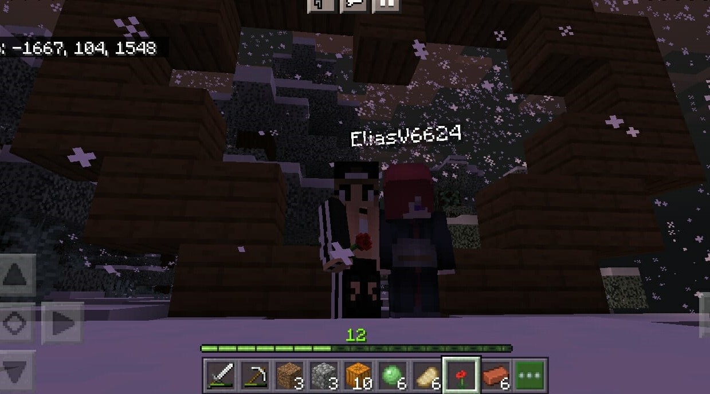

Ester
Eu não sei como vamos estar, quem ou o que seremos um para o outro. Mas eu prometo, que eu até o fim das nossas vidas, de nós dois, eu vou sempre, sempre, seja qual for a dificuldade, o momento, a fase, o problema, seja qual for o lugar, o status, a saude, seja o que for, eu vou sempre estar do seu lado. Eu te amo Ester